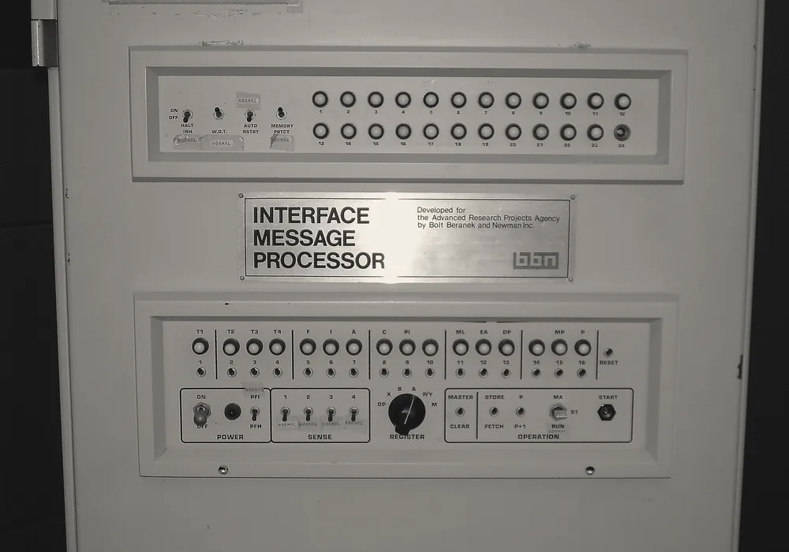
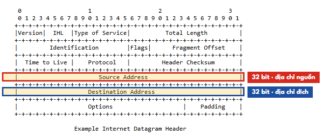
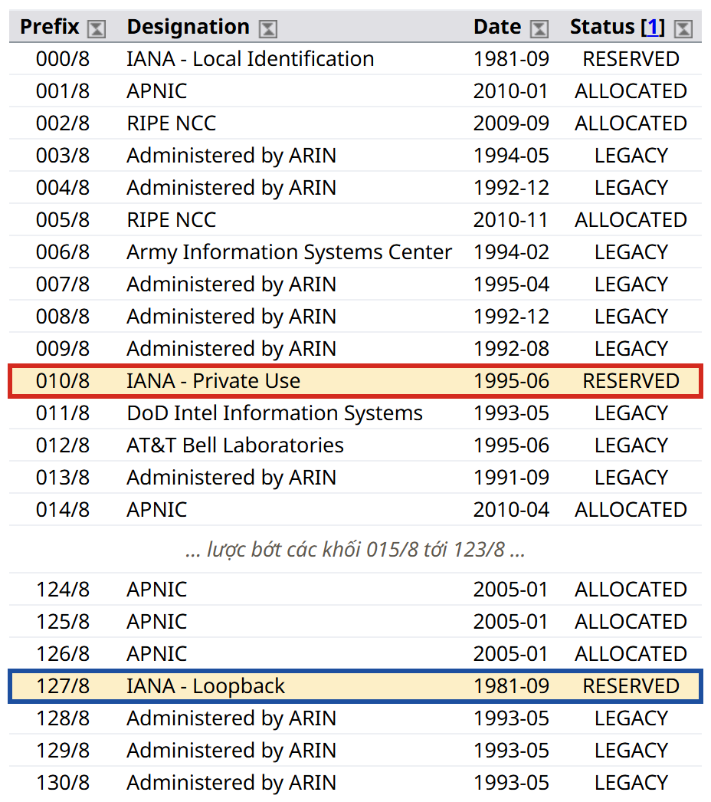

1981 — bối cảnh sinh ra IPv4

.jpg){kind=link}
IPv4 được chuẩn hóa vào tháng 9 năm 1981, trong tài liệu RFC 791. Để hiểu những lựa chọn thiết kế của nó, cần hình dung Internet lúc đó trông như thế nào: nó chưa phải "Internet" theo nghĩa ngày nay mà là ARPANET, một mạng nghiên cứu nối vài trăm máy tính của các trường đại học Mỹ, các phòng thí nghiệm và Bộ Quốc phòng. Phải tới ngày 1 tháng 1 năm 1983 ARPANET mới chuyển hẳn sang bộ giao thức TCP/IP. Một máy tính thời đó to bằng cái tủ, giá bằng một căn nhà, và do một đội kỹ sư vận hành; khái niệm "mỗi người một chiếc máy tính", chứ chưa nói tới "mỗi người vài thiết bị nối mạng", còn là khoa học viễn tưởng.
Trong bối cảnh đó, những người thiết kế chọn độ dài 32 bit cho một địa chỉ. Một
địa chỉ 32 bit thường được viết thành bốn nhóm 8 bit (mỗi nhóm gọi là một octet), mỗi nhóm
đổi sang số thập phân từ 0 tới 255 và ngăn cách bằng dấu chấm — đó chính là cách viết
192.168.10.38 quen thuộc. Tổng số địa chỉ khác nhau mà 32 bit tạo ra được tính rất đơn
giản:
2³² = 4.294.967.296 ≈ 4,3 tỷ địa chỉ
192 .168 .10 .38
11000000.10101000.00001010.00100110 ← 32 bit, chia 4 octet
Năm 1981, dân số thế giới vào khoảng 4,5 tỷ người, và gần như không ai trong số đó sở hữu máy tính. Với những con số ấy, 4,3 tỷ địa chỉ nghe như vô hạn — một không gian mà mạng nghiên cứu vài trăm máy không bao giờ lấp đầy nổi.
Đây không phải sự thiếu tầm nhìn. Đây là một quyết định hợp lý với thông tin có vào lúc đó. Không ai hình dung nổi rằng bốn mươi năm sau, một cái bóng đèn hay một cái tủ lạnh cũng cần địa chỉ IP.
Bài học chung, sẽ gặp lại nhiều lần trong nghề: mọi quyết định kiến trúc đều mang theo giả định về tương lai, và giả định nào rồi cũng hết hạn. Kỹ năng không nằm ở việc đoán đúng tương lai, mà ở việc biết mình đang giả định điều gì để nhận ra khi nào nó hết đúng.
Cách chia ban đầu làm nó cạn nhanh hơn nhiều
Vấn đề không chỉ nằm ở con số 4,3 tỷ, mà còn ở cách chia nó. Ban đầu, không gian địa chỉ được chia theo lớp (classful addressing): vài bit đầu tiên của địa chỉ quyết định nó thuộc lớp nào, và lớp quyết định luôn kích thước khối được cấp. Không có kích thước nào nằm giữa các lớp — một tổ chức chỉ có thể nhận nguyên một khối lớp A, B hoặc C.

10.0.0.0/8 dành cho mạng riêng (RFC 1918) và 127.0.0.0/8 cho loopback. Chụp màn hình iana.org ngày 30/09/2026; người viết đã ẩn các khối 015/8 tới 123/8 và hai cột WHOIS/RDAP cho gọn, rồi thêm khung đánh dấu.| Lớp | Bit đầu | Số mạng | Địa chỉ mỗi mạng | Ghi chú |
|---|---|---|---|---|
| A | 0 | 128 | 16.777.216 | Mạng 0 và 127 dành riêng; cả lớp chiếm một nửa toàn bộ không gian |
| B | 10 | 16.384 | 65.536 | Một phần tư không gian |
| C | 110 | 2.097.152 | 256 | Một phần tám không gian |
| D | 1110 | — | — | Multicast (224.0.0.0/4) |
| E | 1111 | — | — | Dự trữ (240.0.0.0/4) |
Class A → 16.777.216 địa chỉ cho MỘT tổ chức
Class B → 65.536 địa chỉ
Class C → 256 địa chỉBước nhảy 256 lần giữa các cỡ khối là nguồn gốc của sự lãng phí. Một công ty cần 300 địa chỉ thì
khối lớp C (256) không đủ, nên phải nhận một khối lớp B với 65.536 địa chỉ — và bỏ không hơn 99% số đó.
Ở cực trên, MIT, Ford, Apple, IBM, Bộ Quốc phòng Mỹ — mỗi nơi được nguyên một khối lớp
A, tức hơn 16 triệu địa chỉ. Hàng trăm triệu địa chỉ bị khóa trong tay vài chục tổ chức, phần
lớn không bao giờ dùng hết. Sổ đăng ký chính thức của IANA về các khối /8 đến nay vẫn còn
ghi lại dấu vết của thời kỳ này; về sau, khi địa chỉ trở nên khan hiếm và có giá, một số tổ chức đã
trả lại hoặc bán bớt khối lớp A của mình.
Đầu thập niên 1990 — báo động
World Wide Web ra đời năm 1991, và Internet bắt đầu bùng nổ thương mại. Tới đầu thập niên 1990, cộng đồng kỹ thuật nhận ra hai cuộc khủng hoảng đang tới cùng lúc: các khối lớp B — cỡ khối "vừa vặn" nhất cho doanh nghiệp — đang cạn nhanh, và bảng định tuyến của các router lõi Internet đang phình ra vì mỗi khối lớp C được cấp lại là một dòng định tuyến riêng. Khoảng năm 1992, IETF — tổ chức soạn thảo các chuẩn Internet — bắt đầu thiết kế một thế hệ giao thức kế tiếp. Đặc tả IPv6 đầu tiên xuất hiện năm 1995 (RFC 1883), được sửa lại thành RFC 2460 vào cuối năm 1998, và mãi tới năm 2017 mới được nâng lên thành chuẩn Internet chính thức (RFC 8200).
Nhưng IPv6 đã không được dùng. Lý do không nằm ở chỗ nó kém, mà ở chỗ trong lúc chờ nó, người ta đã vá tạm cho IPv4 — và miếng vá hiệu quả tới mức áp lực phải chuyển đổi gần như biến mất.
Hai miếng vá đã trì hoãn khủng hoảng thêm 20 năm
Miếng vá 1 — CIDR (1993)
CIDR (Classless Inter-Domain Routing), chuẩn hóa năm 1993 trong RFC 1519 và nay được thay bằng RFC 4632, làm một việc nghe thì đơn giản: bỏ hệ thống lớp. Thay vì để vài bit đầu quyết định cỡ khối, CIDR cho phép ranh giới giữa phần "mạng" và phần "máy" nằm ở bất kỳ bit nào, và ghi vị trí đó bằng một con số sau dấu gạch chéo. Đây chính là nguồn gốc của ký hiệu mà bạn sẽ gặp suốt đời làm nghề, trong cấu hình firewall, Docker network, VPC trên cloud:
192.168.1.0/24 ← 24 bit đầu cố định, 8 bit cuối tự do → 256 địa chỉ
10.0.0.0/8 ← 8 bit đầu cố định → 16,7 triệu địa chỉ
số địa chỉ trong khối /n = 2^(32 − n)Nhờ đó, công ty cần 300 địa chỉ ở ví dụ trước giờ nhận một khối /23 (512 địa chỉ) thay
vì 65.536. CIDR còn giải quyết luôn cuộc khủng hoảng thứ hai: nhiều khối nhỏ nằm liền nhau có thể được
gộp thành một khối lớn và quảng bá bằng một dòng định tuyến duy nhất, giúp bảng định tuyến lõi ngừng
phình to vô tội vạ.
- Prefix tiền tố mạng
- Phần bit cố định ở đầu địa chỉ, chung cho mọi máy trong một khối. Trong
192.168.1.0/24, prefix là 24 bit đầu. - Subnet mask mặt nạ mạng con
- Cách viết cũ của cùng thông tin đó:
/24tương đương255.255.255.0. Bạn sẽ còn thấy cả hai cách viết trong các công cụ. - Route aggregation gộp tuyến
- Quảng bá nhiều khối liền nhau bằng một prefix ngắn hơn, để router chỉ cần nhớ một dòng thay vì nhiều dòng.
Miếng vá 2 — NAT (1994), miếng vá thay đổi tất cả
NAT (Network Address Translation), được mô tả lần đầu trong RFC 1631 năm 1994 và
sau đó trong RFC 3022, cho phép cả một mạng dùng chung MỘT địa chỉ public. Nó đi kèm
với các dải địa chỉ private mà RFC 1918 dành riêng — 10.0.0.0/8,
172.16.0.0/12, 192.168.0.0/16 — những dải mà bất kỳ mạng nội bộ nào cũng được
dùng lại, chính vì chúng không bao giờ xuất hiện trên Internet.
┌──── NHÀ / VĂN PHÒNG CỦA BẠN ─────┐
│ │
│ laptop 192.168.10.38 │ ← PRIVATE
│ điện thoại 192.168.10.51 │ không ra Internet được
│ TV 192.168.10.77 │
│ │ │
└──────────────────┼───────────────┘
│
ROUTER (NAT)
│
14.161.xx.xx ← PUBLIC, MỘT địa chỉ duy nhất
│ cả nhà dùng chung
~ INTERNET ~Cơ chế cụ thể như sau. Khi laptop gửi một gói tin ra Internet, router thay địa chỉ nguồn private của gói tin bằng địa chỉ public của chính nó, đồng thời thay port nguồn bằng một port do router tự chọn, rồi ghi cặp thay thế đó vào một cuốn sổ. Dạng NAT có dịch cả port như thế này được gọi chính xác là NAPT (hay PAT), và đó là thứ gần như mọi router gia đình đang chạy:
192.168.10.38 : 55289 ⟷ 14.161.xx.xx : 61204 → 104.20.23.154:443
192.168.10.51 : 49802 ⟷ 14.161.xx.xx : 61205 → 104.20.23.154:443Khi gói tin trả lời quay về 14.161.xx.xx:61204, router tra sổ, thấy port
61204 ứng với 192.168.10.38:55289, đổi địa chỉ đích lại cho đúng, và chuyển
cho laptop chứ không phải điện thoại — dù cả hai đang nói chuyện với cùng một server.
Nhớ dòng from 192.168.10.38 port 55289 trong curl -v?
Cái ephemeral port đó chính là thứ NAT dùng để phân biệt các kết nối từ các máy trong nhà bạn. Không có nó, router không biết trả gói tin về cho ai.
Một chi tiết tưởng như vụn vặt hóa ra là trụ cột của cả cơ chế đã cứu Internet.
NAT hiệu quả tới mức nó đẩy lùi khủng hoảng IPv4 thêm hai thập kỷ. Nhưng nó chỉ trì hoãn chứ không xóa được giới hạn: ngày 3 tháng 2 năm 2011, IANA phát đi những khối địa chỉ IPv4 trống cuối cùng cho các cơ quan quản lý địa chỉ khu vực; vài tháng sau, APNIC — cơ quan phụ trách khu vực châu Á – Thái Bình Dương, trong đó có Việt Nam — chuyển sang chính sách cấp phát nhỏ giọt cho khối cuối cùng của mình.
Cái giá của NAT — và vì sao bạn phải thuê VPS

192.168.x.x, còn router đứng ra đại diện bằng một địa chỉ duy nhất phía nhà mạng. Ảnh: Evan-Amos, Wikimedia Commons, public domain; đã chuyển hai tông mực/giấy.
Mọi miếng vá đều có giá, và giá của NAT là phá vỡ một nguyên tắc gốc của Internet: mọi máy đều có thể gọi thẳng mọi máy. Cuốn sổ NAT chỉ được ghi khi có một kết nối đi ra; một gói tin từ Internet đi vào mà không khớp dòng nào trong sổ thì router không có cách nào biết nó dành cho thiết bị nào trong nhà, nên đành vứt bỏ. Kết quả là một sự bất đối xứng mà người dùng Internet ngày nay coi là hiển nhiên, dù nó chưa bao giờ là thiết kế ban đầu:
Máy bạn GỌI RA Internet → được, NAT ghi sổ và trả lời về
Internet GỌI VÀO máy bạn → không được. Router không biết
gói tin này dành cho máy nào trong nhà.Năm 1984, Saltzer, Reed và Clark công bố bài báo End-to-End Arguments in System Design, lập luận rằng mạng ở giữa nên càng "ngốc" càng tốt — chỉ chuyển gói tin — còn mọi trí tuệ nên nằm ở hai đầu. Internet được xây theo tinh thần đó: bất kỳ hai máy nào cũng là hai đầu ngang hàng. NAT đặt một thiết bị "thông minh" vào giữa, ghi nhớ trạng thái của từng kết nối, và từ đó quyết định kết nối nào được phép tồn tại. Đó là lý do nhiều kỹ sư mạng coi NAT không chỉ là một miếng vá, mà là một thay đổi kiến trúc.
| Hiện tượng bạn gặp hằng ngày | Nguyên nhân gốc |
|---|---|
| Muốn chạy server tại nhà cho người ngoài truy cập phải cấu hình port forwarding trên router | NAT chặn chiều vào; port forwarding là ghi tay một dòng cố định vào sổ |
| Gọi video, chơi game P2P, VoIP cần máy chủ STUN/TURN làm trung gian | Hai máy cùng nằm sau NAT không gọi thẳng nhau được |
| Bạn phải thuê VPS để deploy | Máy bạn không có địa chỉ mà thế giới gọi tới được |
Bạn phải thuê VPS không phải vì máy bạn yếu — laptop của bạn thừa sức chạy Spring Boot và PostgreSQL. Mà vì máy bạn không có địa chỉ mà thế giới gọi tới được.
NAT đã biến người dùng Internet từ "người tham gia bình đẳng" thành "khách hàng chỉ biết tiêu thụ". Đó là một thay đổi kiến trúc sâu sắc, và hầu hết mọi người không biết nó đã xảy ra.
Tầng NAT thứ hai: khi cả nhà mạng cũng NAT
Khi địa chỉ IPv4 public trở nên khan hiếm, nhiều nhà mạng không còn đủ địa chỉ để cấp cho mỗi router gia đình một địa chỉ riêng. Giải pháp của họ là đặt thêm một tầng NAT nữa ở phía nhà mạng, gọi là Carrier-Grade NAT (CGNAT): router nhà bạn nhận một địa chỉ "gần như public" từ nhà mạng, và hàng trăm khách hàng dùng chung một địa chỉ public thật ở phía sau. Hệ quả thực tế là ngay cả port forwarding trên router nhà bạn cũng vô dụng, vì gói tin từ Internet đã bị chặn ở tầng NAT của nhà mạng, trước khi tới được router của bạn.
RFC 6598 dành riêng dải 100.64.0.0/10 (từ 100.64.0.0 tới
100.127.255.255) làm "không gian địa chỉ dùng chung" giữa nhà mạng và khách hàng trong
mô hình này. Nếu trang quản trị router cho thấy địa chỉ WAN nằm trong dải đó, hoặc là một địa chỉ
private, và nó khác với địa chỉ public mà các trang "địa chỉ IP của tôi" báo về, thì bạn đang đứng
sau ít nhất hai tầng NAT. Đó thêm một lý do nữa để server production nằm trên VPS.
IPv6 — khác gì
Người ta hay tóm tắt IPv6 là "IPv4 với địa chỉ dài hơn", nhưng cách tóm tắt đó bỏ sót ý đồ của những người thiết kế. Ngoài việc mở rộng không gian địa chỉ tới mức không cần NAT nữa — tức là khôi phục lại khả năng mọi máy gọi thẳng mọi máy — IPv6 còn đơn giản hóa phần đầu gói tin để router xử lý nhanh hơn, và cho phép thiết bị tự cấu hình địa chỉ mà không cần máy chủ cấp phát.
| IPv4 | IPv6 | |
|---|---|---|
| Độ dài địa chỉ | 32 bit | 128 bit |
| Số địa chỉ | 4,3 tỷ | 3,4 × 10³⁸ |
| Cách viết | thập phân, 4 nhóm | thập lục phân, 8 nhóm |
| Ví dụ | 192.168.1.1 | 2606:4700:10::ac42:93f3 |
| Đầu gói tin | 20–60 byte, độ dài thay đổi | Cố định 40 byte |
| Tự cấu hình địa chỉ | Cần DHCP | Tự cấu hình được (SLAAC), hoặc DHCPv6 |
| Broadcast | Có | Không có — thay bằng multicast |
| NAT | Phổ biến, gần như bắt buộc | Không cần trong thiết kế |
Chia đều cho 8 tỷ người trên Trái Đất, mỗi người nhận được một lượng địa chỉ bằng khoảng 10 tỷ tỷ lần toàn bộ không gian IPv4 hiện nay.
Đây không phải "nhiều gấp 4 lần". Mỗi bit thêm vào là gấp đôi. Thêm 96 bit là gấp đôi 96 lần liên tiếp.
Đọc một địa chỉ IPv6
Một địa chỉ IPv6 gồm 8 nhóm, mỗi nhóm 16 bit viết bằng 4 chữ số thập lục phân. Viết đầy đủ thì rất
dài, nên chuẩn cho phép hai cách rút gọn: bỏ các số 0 ở đầu mỗi nhóm, và thay một chuỗi liên
tiếp các nhóm toàn số 0 bằng hai dấu hai chấm ::.
Đầy đủ: 2606:4700:0010:0000:0000:0000:ac42:93f3
Rút gọn: 2606:4700:10::ac42:93f3
↑
"::" thay cho một chuỗi nhóm toàn số 0
(chỉ được dùng MỘT lần trong một địa chỉ)Vì sao :: chỉ được dùng một lần? Bởi vì người đọc phải tự suy ra nó thay cho bao nhiêu
nhóm, bằng cách lấy 8 trừ đi số nhóm còn lại. Nếu có hai chỗ ::, sẽ không có cách nào biết
mỗi chỗ thay cho mấy nhóm. Với hai quy tắc đó, bạn đọc được hai địa chỉ đã gặp trong lab:
fe80::10 = fe80:0000:0000:0000:0000:0000:0000:0010
← router WiFi, link-local
::1 = 0000:0000:0000:0000:0000:0000:0000:0001
← LOOPBACK IPv6. Chính là 127.0.0.1 của thế giới IPv6.Vì có nhiều cách viết cùng một địa chỉ, RFC 5952 quy định một dạng khuyến nghị duy nhất để công cụ
và con người so sánh được với nhau: chữ thường, bỏ số 0 đầu nhóm, và :: dùng cho chuỗi
nhóm 0 dài nhất. Kiến trúc địa chỉ IPv6 (RFC 4291) cũng định nghĩa các dải đặc biệt tương
ứng với những gì bạn đã biết ở IPv4: ::1 là loopback, fe80::/10 là
link-local, và dải Unique Local Address fc00::/7 (RFC 4193, thực tế dùng
fd00::/8) đóng vai trò gần giống các dải private của RFC 1918.
Đính chính: ::1 không phải thủ phạm của 2,155 giây
Trên Windows hiện đại, tên localhost thường phân giải ra hai địa chỉ:
::1 trước, rồi 127.0.0.1. Vì thế curl localhost:9999 phải thử
lần lượt cả hai và bị từ chối cả hai, nên tốn thời gian hơn so với khi chỉ thử một địa chỉ.
Bản ghi đầu tiên của phụ lục này cho rằng việc localhost phân giải ra hai địa chỉ là
"thủ phạm của 2,2 giây". Đối chiếu lại với lệnh đã thực sự chạy thì kết luận đó không đứng vững: phép
đo 2,155 giây dùng curl -4 và gõ thẳng 127.0.0.1, nên ::1 không
hề tham gia. Con số đó đến từ hành vi thử lại của Windows khi bị từ chối kết nối, như đã phân tích ở
trang mổ băng output. Cơ chế hai địa chỉ ở trên vẫn đúng
— nó chỉ không phải lời giải cho phép đo này.
Cơ chế hai địa chỉ đó lại chính là nguồn gốc của một lỗi kinh điển mà rất nhiều người gặp:
ECONNREFUSED ::1. Kịch bản điển hình là database chỉ listen ở 127.0.0.1, còn
ứng dụng kết nối tới localhost và thử ::1 trước — ví dụ Node.js từ phiên bản
17 đã thôi tự ưu tiên IPv4 mà dùng đúng thứ tự hệ điều hành trả về. Kết quả là một lỗi "bị từ chối" dù
database đang chạy hoàn toàn bình thường, chỉ là không ngồi ở cửa mà ứng dụng gõ.
Vì sao sau gần 30 năm IPv6 vẫn chưa thắng
Với một giao thức ưu việt về mọi mặt kỹ thuật, tốc độ phổ cập chậm như vậy cần được giải thích bằng kinh tế học nhiều hơn là bằng kỹ thuật. Bảng dưới đây gom bốn lực chính; điểm chung của ba lực đầu là chúng khiến việc chuyển đổi tốn chi phí ngay nhưng chỉ mang lại lợi ích về sau, và chủ yếu cho người khác.
| Lý do | Giải thích |
|---|---|
| 1 Không tương thích ngược | Máy chỉ có IPv6 không nói chuyện được với máy chỉ có IPv4. Không có cách nâng cấp dần tại chỗ — phải chạy song song cả hai (dual-stack) tốn gấp đôi công vận hành, không được lợi gì ngay. |
| 2 NAT "đủ dùng" | Không có khủng hoảng nào thực sự nổ ra với người dùng cuối. Không ai chịu trả tiền cho một vấn đề chưa đau. |
| 3 Con gà và quả trứng | Nhà mạng không triển khai vì chưa có nội dung. Nội dung không lên IPv6 vì chưa có người dùng. |
| 4 Nhưng nó đang thắng dần | Động lực đến từ di động — mạng 4G/5G có hàng tỷ thiết bị, không thể cấp đủ IPv4, nên phần lớn triển khai IPv6 trước. |
- Dual-stack chạy song song hai giao thức
- Máy hoặc mạng có cả địa chỉ IPv4 lẫn IPv6 và dùng được cả hai. Đây là trạng thái của phần lớn
Internet hiện nay, và là trạng thái của
example.comtrong buổi lab. - NAT64 / DNS64 cầu nối IPv6 sang IPv4
- Cặp cơ chế cho phép một máy chỉ có IPv6 vẫn truy cập được một website chỉ có IPv4: DNS64 "chế" ra một địa chỉ IPv6 đại diện, NAT64 dịch gói tin qua lại ở biên mạng.
Lực 4 chính là lời giải cho bài toán con gà và quả trứng ở lực 3. Nhà mạng di động không thể cấp địa chỉ IPv4 public cho hàng tỷ điện thoại, nên nhiều nhà mạng chọn cho thiết bị chạy IPv6 thuần, rồi dùng các cơ chế như NAT64/DNS64 (RFC 6146, RFC 6147) để thiết bị vẫn vào được phần Internet còn chỉ có IPv4. Khi một lượng lớn người dùng đã đến bằng IPv6, động lực đưa nội dung lên IPv6 tự nhiên xuất hiện — con gà đã có, quả trứng sẽ theo sau.
Google công bố thống kê công khai về tỉ lệ người dùng truy cập Google qua IPv6; con số đã vượt mốc 40% từ vài năm trước — bạn có thể tự kiểm chứng số liệu mới nhất tại google.com/intl/en/ipv6/statistics.html. Hãy để ý đồ thị ở đó có dạng răng cưa theo tuần: tỉ lệ IPv6 cao hơn vào cuối tuần, khi người ta dùng mạng gia đình và di động nhiều hơn mạng công ty — một bằng chứng gián tiếp rằng các mạng doanh nghiệp đang đi chậm nhất.
Output của chính bạn kể lại toàn bộ câu chuyện
Tất cả những gì đọc ở các tab trước — dual-stack, Happy Eyeballs, nhà mạng đi chậm — không cần tin vào sách. Chúng đã hiện ra trên chính terminal của người học trong buổi lab, chỉ cần đọc lại output với con mắt của người đã biết lịch sử:
* IPv6: 2606:4700:10::ac42:93f3 ← example.com CÓ IPv6. Sẵn sàng rồi.
* IPv4: 104.20.23.154 ← và vẫn giữ IPv4. (dual-stack)
* Trying [2606:4700:10::ac42:93f3]:443... ← curl thử IPv6 trước
* Trying 104.20.23.154:443... ← rồi thử IPv4
* Established connection ... 104.20.23.154 ← IPv4 THẮNGcurl -v của buổi lab, có chú thích bên phải.Phía nội dung đã làm xong phần việc của mình: example.com có bản ghi IPv6 và vẫn giữ
IPv4, đúng mô hình dual-stack. Phía client cũng làm đúng: curl ưu tiên IPv6 theo tinh thần
Happy Eyeballs. Nhưng kết nối cuối cùng vẫn đi bằng IPv4. Manh mối vì sao nằm ngay ở dòng đầu tiên của cả
buổi lab:
Server: wifi.cmcc
Address: fe80::10 ← router chỉ có địa chỉ LINK-LOCAL
Không có IPv6 công cộng.nslookup của buổi lab, có chú thích.Router chỉ lộ ra một địa chỉ link-local, nhất quán với giả thuyết rằng mạng gia đình này không có
đường IPv6 ra Internet. Như đã nói ở trang mổ băng output, đây là dấu hiệu mạnh chứ chưa phải chứng minh
tuyệt đối; lệnh curl -6 https://example.com sẽ cho câu trả lời dứt khoát.
Nội dung đã sẵn sàng cho IPv6. Nhà mạng thì chưa.
Đó chính là "vấn đề con gà và quả trứng" ở lực 3, và bạn vừa đo được nó trên terminal của chính mình — không phải đọc trong một báo cáo ngành.
Sáu chỗ điều này sẽ đụng vào bạn trong lộ trình
Việc Internet đang sống ở trạng thái lưng chừng giữa hai giao thức không chỉ là chuyện lịch sử thú vị. Nó để lại những cái bẫy cụ thể trong công việc vận hành hằng ngày, và lộ trình này sẽ đi qua từng cái một. Bảng dưới đây liệt kê trước để khi gặp, bạn nhận ra ngay đó là di chứng của thời kỳ dual-stack chứ không phải một lỗi bí ẩn.
| Chỗ vấp | Bài |
|---|---|
App bind 0.0.0.0 (mọi IPv4) hay :: (mọi IPv6) — chọn sai là không ai gọi được | 09 |
localhost phân giải ::1 trước lỗi ECONNREFUSED ::1 khi app kết nối DB | 09, 19 |
DNS: bản ghi A cho IPv4, AAAA cho IPv6 | 11, 27 |
Nginx phải khai báo cả listen 80; và listen [::]:80; | 21 |
| Firewall: chặn kỹ IPv4 mà để ngỏ IPv6 lỗ hổng bảo mật thật | 13, 25 |
| Docker mặc định chỉ bật IPv4 | 19 |
listen
Về nguyên tắc, một socket IPv6 listen ở :: có thể nhận luôn cả kết nối IPv4 (dưới dạng
địa chỉ "IPv4 ánh xạ" ::ffff:a.b.c.d), tùy vào tùy chọn IPV6_V6ONLY của socket
và cấu hình hệ điều hành. Nginx chọn cách an toàn và rõ ràng: mặc định đặt socket [::] ở chế
độ chỉ nhận IPv6 (tham số ipv6only=on của chỉ thị listen), nên muốn phục vụ cả
hai thì phải khai báo cả hai dòng. Hành vi "tùy hệ điều hành" của socket :: cũng chính là lý
do chỗ vấp đầu tiên trong bảng khó đoán tới vậy.
Rất nhiều người chặn cẩn thận bằng iptables rồi để ngỏ hoàn toàn
ip6tables — hai bộ quy tắc riêng cho hai giao thức — và server vẫn phơi ra
Internet qua IPv6 mà họ không biết.
Ta sẽ kiểm tra đúng chỗ này khi hardening VPS ở Bài 25.
Tự kiểm tra
Bấm vào từng dòng khi tự tin giải thích được mà không nhìn lại.
- Tính được số địa chỉ của IPv4 và của một khối
/24,/23bằng công thức 2^(32 − n) - Giải thích được vì sao hệ thống lớp A/B/C làm IPv4 cạn nhanh hơn, và CIDR sửa điều đó thế nào
- Vẽ lại được cuốn sổ NAT và giải thích vai trò của port trong đó
- Giải thích được vì sao NAT là lý do phải thuê VPS, và CGNAT làm tình hình tệ hơn thế nào
- Rút gọn và viết đầy đủ được một địa chỉ IPv6, và biết vì sao
::chỉ dùng một lần - Kể được ba lý do IPv6 phổ cập chậm và lực nào đang phá thế bế tắc
- Nói được vì sao chặn
iptablesmà quênip6tableslà một lỗ hổng thật
Nguồn đọc thêm
- RFC 791 — Internet Protocol (IPv4), 1981. rfc-editor.org/rfc/rfc791
- RFC 4632 — Classless Inter-domain Routing (CIDR), bản thay thế cho RFC 1519 (1993). rfc-editor.org/rfc/rfc4632
- RFC 1918 — Address Allocation for Private Internets. rfc-editor.org/rfc/rfc1918
- RFC 1631 và RFC 3022 — NAT, mô tả ban đầu (1994) và "Traditional NAT" (2001). rfc-editor.org/rfc/rfc1631 · rfc3022
- RFC 6598 — dải
100.64.0.0/10dùng chung cho Carrier-Grade NAT. rfc-editor.org/rfc/rfc6598 - RFC 8200 — Internet Protocol, Version 6 (IPv6) Specification. rfc-editor.org/rfc/rfc8200
- RFC 4291 — IP Version 6 Addressing Architecture; RFC 5952 — cách viết khuyến nghị cho địa chỉ IPv6. rfc-editor.org/rfc/rfc4291 · rfc5952
- RFC 4193 — Unique Local IPv6 Unicast Addresses. rfc-editor.org/rfc/rfc4193
- RFC 6146 và RFC 6147 — NAT64 và DNS64. rfc-editor.org/rfc/rfc6146 · rfc6147
- IANA — sổ đăng ký các khối IPv4
/8, nơi còn thấy dấu vết cấp phát thời lớp A. iana.org/assignments/ipv4-address-space - IANA — sổ đăng ký các dải địa chỉ IPv4 dùng cho mục đích đặc biệt. iana.org/assignments/iana-ipv4-special-registry
- Nginx — tài liệu chỉ thị
listen, gồm tham sốipv6only. nginx.org/en/docs/http/ngx_http_core_module.html - Google — thống kê tỉ lệ người dùng truy cập qua IPv6. google.com/intl/en/ipv6/statistics.html
- J. H. Saltzer, D. P. Reed, D. D. Clark — End-to-End Arguments in System Design, ACM Transactions on Computer Systems, 1984.